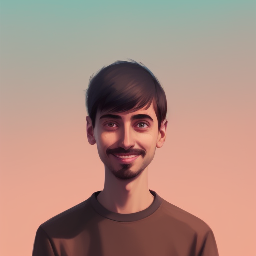

I grew up in the north of Spain, in Santander. But I have had the opportunity to live in various locations such as Barcelona (Spain), Gerona (Spain),
Looe (UK), Ghent (Belgium) and Salem (Germany). Now, I am based in Neuburg an der Donau (Germany). Each of these places has allowed me to learn from diverse
cultures and meet incredible people. Because of it I can speak
During my undergraduate studies, I commuted daily approximately four hours between Barcelona and Gerona, but I used this time for studying and for working in my projects. This determination, combined with my curiosity, has brought me to learn from a variety of subjects including software development, data analysis, economics, ecology, and genetics. I am always eager to continue learning and improving.
In addition to my studies, I am also passionate about new experiences and challenges. This led me to participate in an Erasmus volunteer project,where I lived in a caravan for a year in the UK. I believe volunteering is an excellent way to grow as an individual and make a positive impact in the world.
In my free time I enjoy staying active through sports, coding personal projects, spending time with friends and family, reading and cooking.
English,
C1 - Cambridge certificate
Spanish
and
Native speaker
German
.B1 - Telc Zetifikat
During my undergraduate studies, I commuted daily approximately four hours between Barcelona and Gerona, but I used this time for studying and for working in my projects. This determination, combined with my curiosity, has brought me to learn from a variety of subjects including software development, data analysis, economics, ecology, and genetics. I am always eager to continue learning and improving.
In addition to my studies, I am also passionate about new experiences and challenges. This led me to participate in an Erasmus volunteer project,where I lived in a caravan for a year in the UK. I believe volunteering is an excellent way to grow as an individual and make a positive impact in the world.
In my free time I enjoy staying active through sports, coding personal projects, spending time with friends and family, reading and cooking.
